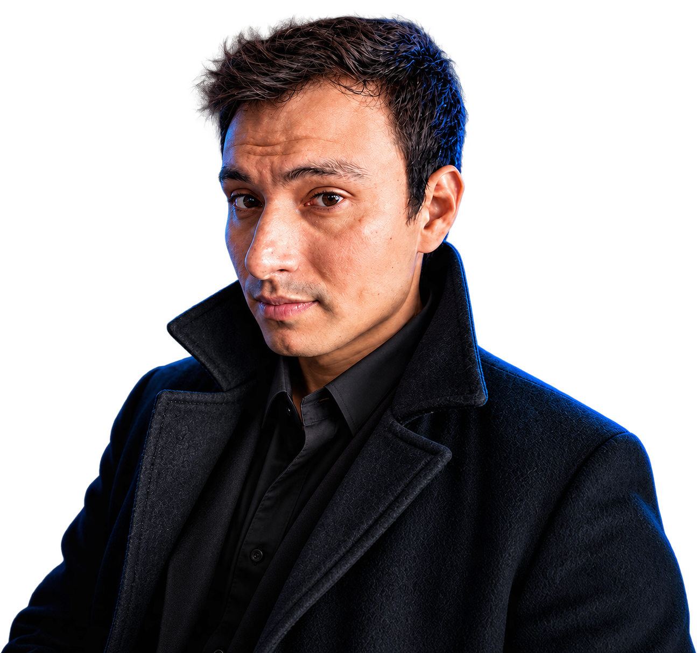
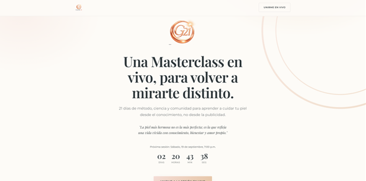
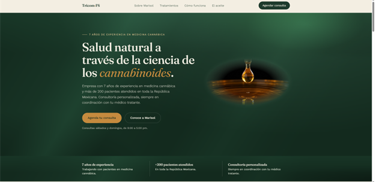
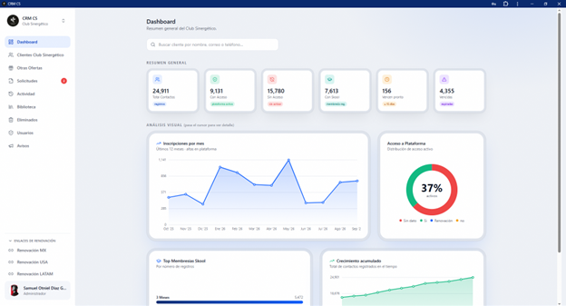
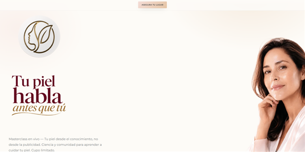
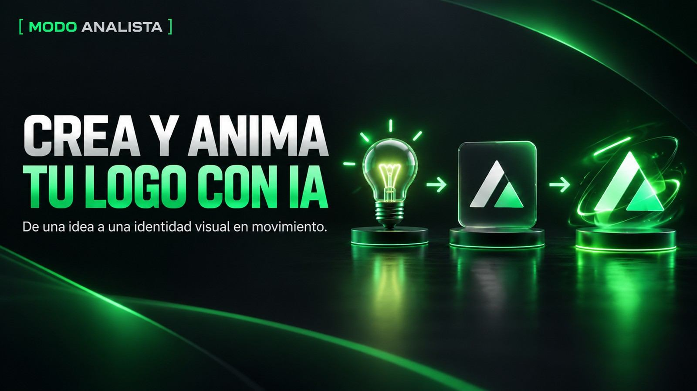
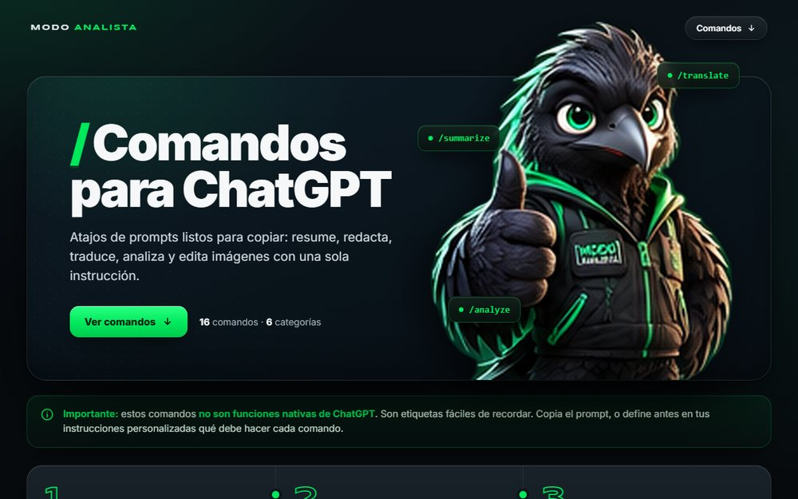

Análisis de datos y dashboards
Organizo, analizo y visualizo tu información para que puedas tomar decisiones con datos claros, no con suposiciones.
Datos · IA · Automatización
Ayudo a profesionales y negocios a organizar su información, automatizar tareas repetitivas y aplicar inteligencia artificial de forma práctica.

Servicios
Organizo, analizo y visualizo tu información para que puedas tomar decisiones con datos claros, no con suposiciones.
Elimino tareas repetitivas y aplico inteligencia artificial de forma práctica para que recuperes tiempo en tu día a día.
Diseño páginas y herramientas digitales enfocadas en un objetivo concreto para tu negocio o proyecto.
Sesiones personalizadas sobre datos, IA, automatización y herramientas digitales, a tu ritmo y para tu contexto.
¿Te suena familiar?
Portafolio
Algunos de los proyectos en los que he trabajado. El detalle de cada caso lo iré completando pronto.

Landing page
Landing page para una masterclass en vivo sobre cuidado de la piel, con conteo regresivo e inscripción.

Landing page
Sitio para una consultoría de medicina cannábica, con agendado de consultas en línea.

Dashboard
Dashboard interno para dar seguimiento a contactos, accesos a la plataforma y membresías en tiempo real.

Landing page
Página de preregistro para una masterclass de cuidado de la piel.
Sobre mí
Coordinador de Data y analista de datos
Combino datos, inteligencia artificial, automatización y herramientas digitales para crear soluciones prácticas. Mi objetivo es ayudar a profesionales y negocios a trabajar de forma más eficiente con la tecnología que ya tienen a su alcance.
Cómo trabajamos
Platicamos qué estás intentando resolver y en qué contexto.
Definimos el enfoque más simple y efectivo para tu caso.
Desarrollo la solución y la dejo funcionando para ti.
Mentorías
Doy sesiones 1:1 para personas y profesionales que quieren aprender sobre:
Material de clase
Prompts y recursos listos para copiar y usar con IA. Entra a cada herramienta para ver el paso a paso.

Prompts · Presentación
De una idea a una identidad visual en movimiento: crea el logo en ChatGPT, analízalo y anímalo con una IA de video.
EntrarPrompts · Presentación
¿Otro chatbot? No. Qué es Muse, cómo empezar a usarlo y tu primera tarea en 5 minutos, con prompts listos para copiar.
EntrarPrompts · Presentación
Crea la mascota de tu marca y conviértela en el rostro de tus videos para TikTok e Instagram.
Entrar
Biblioteca de prompts
16 comandos listos para copiar: resume, redacta, traduce, analiza y edita imágenes con una sola instrucción.
EntrarSígueme
Cuéntame qué estás intentando resolver y veamos cómo puedo ayudarte.
Hablar con Samuel